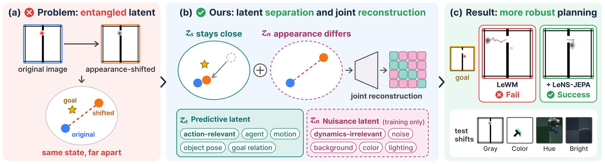

Overview
Keep the state, route the nuisance elsewhere.
JEPA world models plan by comparing latent states. When background color, texture, brightness, blur or noise change at test time, the latent moves even though the physical state does not, and planning fails. LeNS-JEPA adds a training-only nuisance pathway to an existing world model so that its predictive latent depends less on appearance, using clean trajectories only.
TL;DR. A learned patch mask hides nuisance patches from the predictive encoder and routes their features to an auxiliary nuisance latent z_n. Both latents reconstruct the full observation, so masked content is kept rather than discarded, and an action-adversarial critic keeps state out of the nuisance path. At inference the base model encodes the full image exactly as before.

The five appearance shifts
The same validation frame under each test-time shift. Training sees only clean frames; the goal image stays clean at test time.